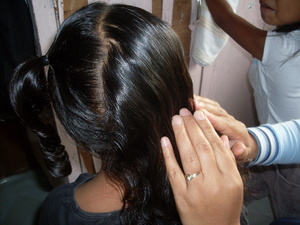

hulus 
/hulus/
v_rt.
“squeeze”
vt.
for something (eghulusen, hulusen, patient, eg><en-) to be squeezed in order to force out its contents
Wrd.Gloss: squeeze_out
Eng. squeeze out
Online dict status: -
Usage level: M
v.
to stretch out a rope
Hulusa nu
Stretch it out.
Eng. stretch; lay out; flatten out
Online dict status: -
Usage level: M
vi.
for something being gripped (egkewulus, newulus, actor, egkA><ø-) to slip through one's hands, or for someone to slip down a rope they were climbing or to fall off a horse when it raises its front legs
Emun ke egpatakereg ka kalabew, panamantaman ka kambil su eyew kenè ka egkewulus.
If the carabao is moving up (e.g. going in top of the hill), hold your feet tightly in its body so that you will not slip through it.
Eng. slip through; fall off
Online dict status: -
Usage level: M
Updated by: JLM,JUN,RJH,TME,QDL
Last updated: 25/Nov/2009
This page last updated: 28-Dec-2019
Copyright © 2009-2014, Matigsalug Language Christian Association, Inc